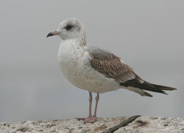

 海鸥（学名：Larus canus）是一种中等体型的鸥。体长38-44厘米，翼展106-125厘米，体重300-500克，寿命24年。
海鸥（学名：Larus canus）是一种中等体型的鸥。体长38-44厘米，翼展106-125厘米，体重300-500克，寿命24年。[1] 腿及无斑环的细嘴绿黄色，白尾，初级飞羽羽尖白色，具大块的白色翼镜。冬季头及颈散见褐色细纹，有时嘴尖有黑色。海鸥身姿健美，惹人喜爱，其身体下部的羽毛就像雪一样晶莹洁白。
<h1>HTML标签 - 路径知识 - 绝对定位 - absolute</h1> <p> <h2>HTML绝对路径(Absolute Path)</h2> 完整的描述文件位置的路径就是绝对路径,不需要知道其他任何信息就可以根据绝对路径判断出文件<br>的位置； </p> <img src="C:/Users/asusaad/Pictures/1.jpg" width="700" height="466"/> <h1>HTML标签 - 路径知识 - 相对路径 - relative</h1> <p> <h2>HTML相对路径(Relative Path)</h2> 同一个目录的文件引用：如果源文件和引用文件在同一个目录里，直接写引用文件名即可，这时引用<br>文件的方式就是使用相对路径。 </p> <img src="222.jpg" /><br /><br /> <h1>上一级目录插入图片 ../</h1> <img src="../1.jpg" src="月亮" width="383" height="170"/><br/><br/> <h1>排列图片(align = "bottom / middle / top")</h1> <p> <img src="images/3.jpg" alt="海鸥" width="268" height="193" align="middle"/> 海鸥（学名：Larus canus）是一种中等体型的鸥。体长38-44厘米，翼展106-125厘米，体重300-500克，寿命24年。 </p> <h1>浮动图片（带有图像的一个段落，图像的 align 属性设置为 "left / right"图像将浮动到文本的左/右侧）</h1> <p style="width:100%;height:268px;"> <img src="images/3.jpg" alt="海鸥" width="268" height="193" align="right"/> 海鸥（学名：Larus canus）是一种中等体型的鸥。体长38-44厘米，翼展106-125厘米，体重300-500克，寿命24年。[1] 腿及无斑环的细嘴绿黄色，白尾，初级飞羽羽尖白色，具大块的白色翼镜。冬季头及颈散见褐色细纹，有时嘴尖有黑色。海鸥身姿健美，惹人喜爱，其身体下部的羽毛就像雪一样晶莹洁白。 </p> <h1>图片标签的应用 - 链接 - a标签（文字标签）</h1> <a href="http://image.so.com/" target="_blank"> <img src="images/2.jpg" alt="花" width="174" height="135" /> </a> <br/><br/> <h2>jpg 图片标签：.jpg</h2> <img src="images/1.jpg" width="400" height="250"/><br/> <img src="images/2.jpg"/> <h2>gif图片标签：.gif</h2> <img src="images/3.gif" /> <h2>png图片标签：.png</h2> <img src="images/4.png" />